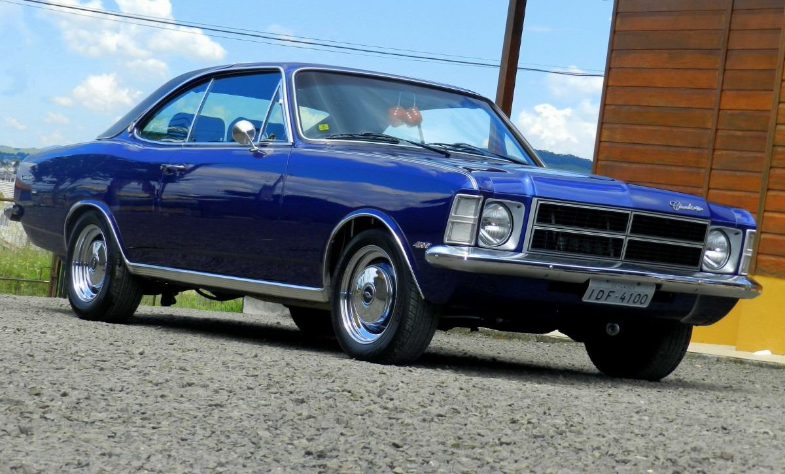
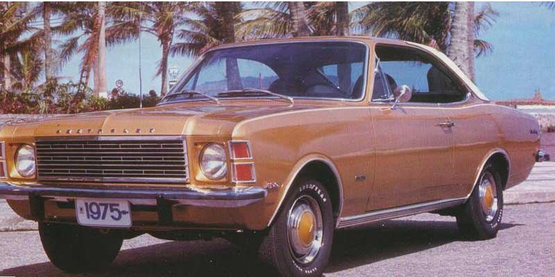

Comodoro 4.0
Uma das coisa mais prazerossas na vida é da uns passeios de carro, aqueles mais antigos e que chamam a tenção por onde passa, um carro bem conservado e antigo é um sonho de consumo para muita gente, ainda mais quando se trata de alugém como eu que sabe realmente o que é bom, e nao se ilude com as tecnologias implantas nos carros de hoje me dia, pois o gostosso é a robustez dos antigo.
